This database contains images of 16 hand configurations of the Argentinian Sign Language (LSA), each performed 5 times by 10 different subjects, for a total of 800 images. The subjects wore color hand gloves and black clothes.
The following table lists the id and name of each handshape, along with a sample.
| ID | Name | Sample | ID | Name | Sample | ID | Name | Sample | ID | Name | Sample |
|---|---|---|---|---|---|---|---|---|---|---|---|
| 01 | Five | 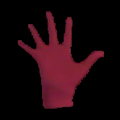 | 02 | Four | 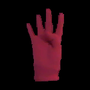 | 03 | Horns | 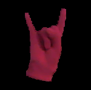 | 04 | Curve | 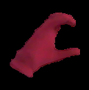 |
| 05 | Fingers together | 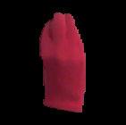 | 06 | Double | 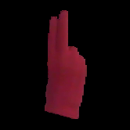 | 07 | Hook | 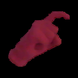 | 08 | Index | |
| 09 | L | 10 | Flat Hand | 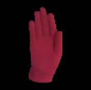 | 11 | Mitten | 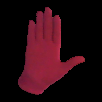 | 12 | Beak | 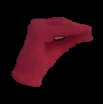 | |
| 13 | Thumb | 14 | Fist | 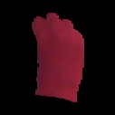 | 15 | Telephone | 16 | V | 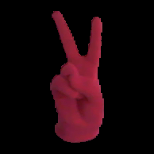 |
The dataset was recorded in an indoors environment, with artificial lightning.
Subjects wore dark clothes and performed the handshapes standing, with a white wall as a background. To simplify the problem of hand segmentation within an image, subjects wore fluorescent-colored gloves. These substantially simplify the problem of recognizing the position of the hand and performing its segmentation, and remove all issues associated to skin color variations, while fully retaining the difficulty of recognizing the handshape. The subjects performed the same handshape with both hands.
Each handshape was executed imposing few constraints on the subjects to increase diversity and realism in the database. All subjects were non-signers and right-handed, were taught how to perform the handshape during the shooting session by showing them an image of the handshape as performed by one of the authors, and practiced each handshape a few times before recording.
We employed a generic webcam for the recording, with a resolution of 640 by 480.
The raw version of the dataset contains one image for each handshape instance in the dataset. Each image is on average 0.25mb.
The filename of each image specifies its class, subject, and repetition, in the format CLASS_SUBJECT_REPETITION.png. For example, the image 3_2_4.png corresponds to the 4th repetition of handshape 3 (Horns), as performed by subject 2.
We provide a pre-processed version of the dataset to reduce the overhead of performing experiments with the data. From each image we extracted only the right hand and segmented it, replacing the background with black pixels. The filename format is the same as in the raw version. We provide only the segmented hand images. The details of how the images were segmented are described in Handshape recognition for Argentinian Sign Language using ProbSom
Download Preprocessed Version (8mb)
## Citing If you use the dataset in your research, we kindly ask you to cite the article [Handshape recognition for Argentinian Sign Language using ProbSom](http://sedici.unlp.edu.ar/bitstream/handle/10915/52376/Documento_completo.pdf-PDFA.pdf?sequence=1): ``` @Article{Ronchetti2016, author="Ronchetti, Franco and Quiroga, Facundo and Lanzarini, Laura and Estrebou, Cesar", title="Handshape Recognition for Argentinian Sign Language using ProbSom", journal=" Journal of Computer Science and Technology ", year="2016", volume="16", number="1", pages="1--5", issn="1666-6038" } ```Sample images of the dataset.
| 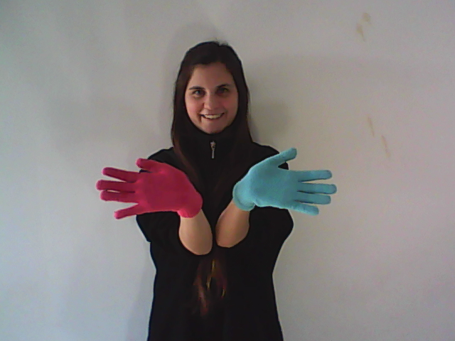 | 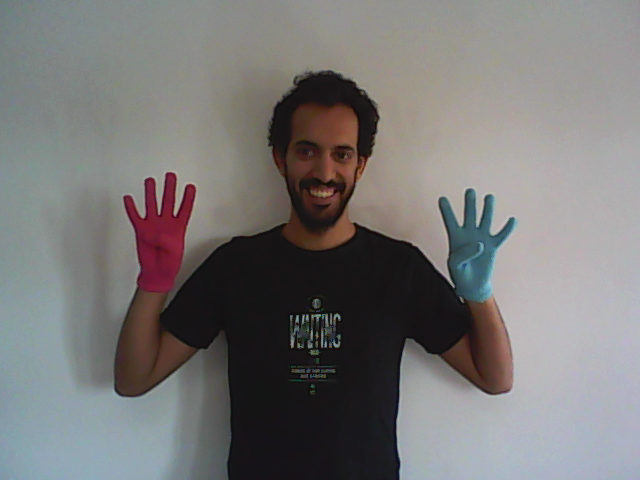 |
|
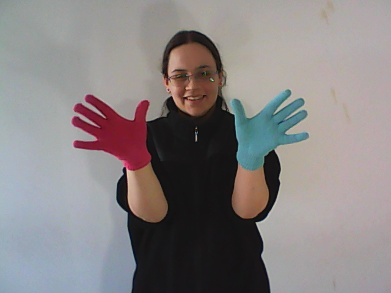 |
| 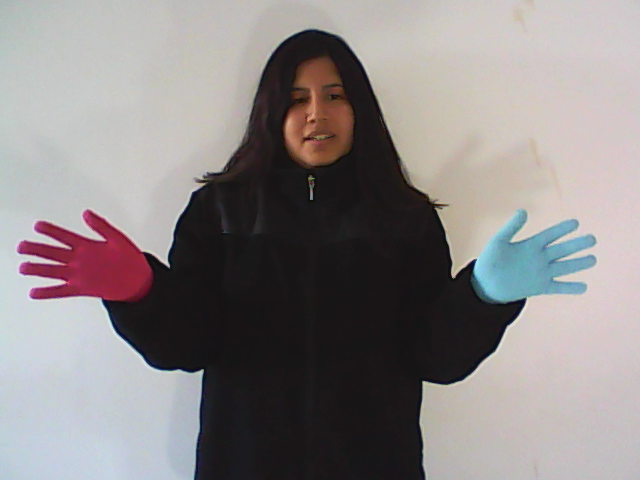 | 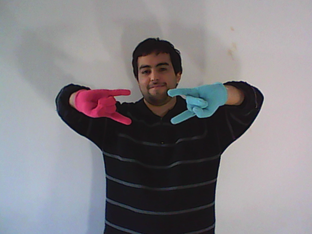 |
| 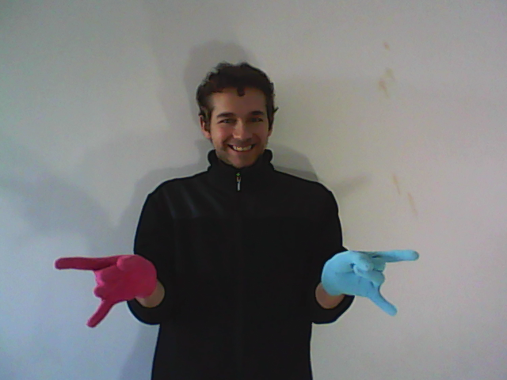 | 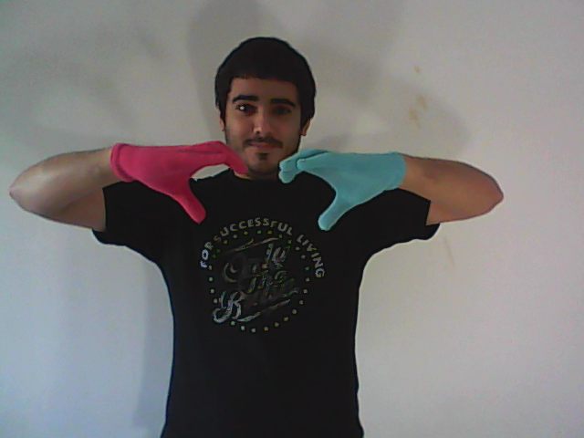 |
| 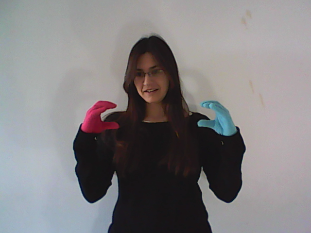 | 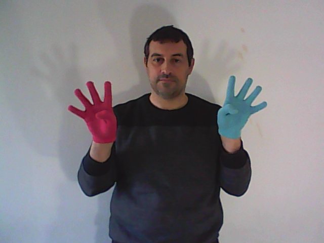 |

This work is licensed under a Creative Commons Attribution-NonCommercial-NoDerivatives 4.0 International License. The dataset is made available strictly for academic purposes. No derivative works or commercial use are allowed. Please contact the authors if you are unsure about what constitutes fair use under this license, or need to use the dataset under a different license.
## Contact Facundo Manuel Quiroga {fquiroga}-at-lidi.info.unlp.edu.ar [III-LIDI](http://www.lidi.info.unlp.edu.ar/) Informatics Institute [Informatics Faculty](http://info.unlp.edu.ar/) [UNLP](http://unlp.edu.ar/)